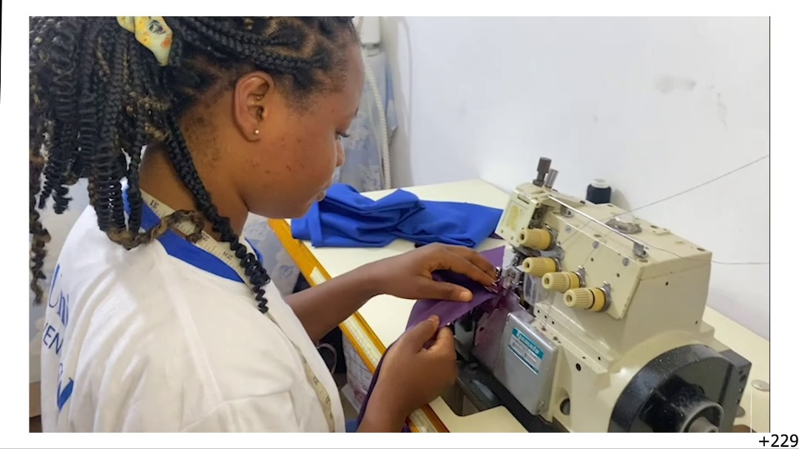
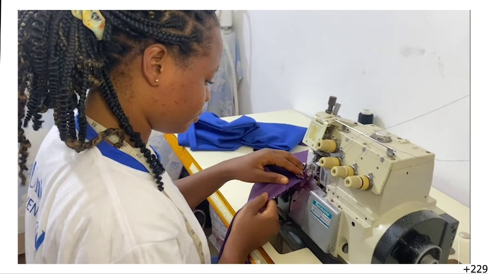

Découvrez nos activités en agriculture et couture pour un avenir meilleur.
L'ONG Edu-Universel s'engage à offrir des formations pratiques et adaptées pour améliorer les compétences et autonomiser les communautés.
Nos programmes en agriculture et couture sont conçus pour répondre aux besoins locaux tout en encourageant un développement durable, inclusif et résilient.
Soutenir l’agriculture durable pour un développement local résilient
L’agriculture est au cœur de notre vision pour un développement durable et inclusif. À Educ Universel, nous croyons que nourrir les populations, protéger l’environnement et promouvoir l’autonomie des communautés rurales vont de pair.
Notre vision : Une agriculture béninoise productive, écologique et inclusive, qui place l’humain et la nature au centre de son développement.

Un atelier de couture au service de l’autonomisation
« La main d’Educ Universel » est un projet porté par l’ONG Educ Universel. Il vise à promouvoir l’apprentissage de la couture et à créer des opportunités d’insertion professionnelle pour les jeunes et les femmes, tout en valorisant le savoir-faire local.
 


Ce projet contribue à la réduction du chômage et à l’autonomisation des communautés vulnérables.
En soutenant « La Main d’Educ Universel », vous participez à un changement durable basé sur la dignité et la créativité.
Rejoignez-nous pour coudre un avenir meilleur !
Ensemble, nous pouvons faire la différence. Participez à nos activités ou soutenez-nous par un don.
Contactez-nousRejoignez notre mission pour autonomiser les communautés grâce à l'éducation, la formation et la solidarité. Chaque action compte.